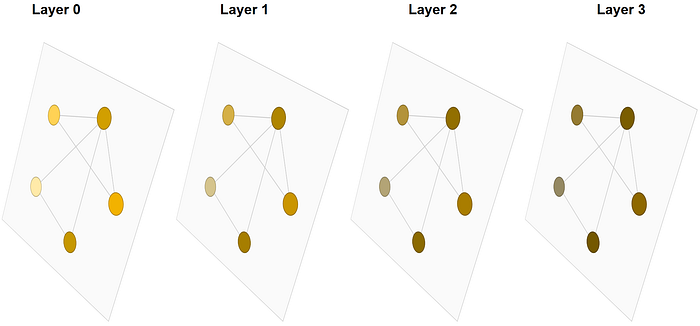

A GNN Representation from https://distill.pub/2021/gnn-intro/
I’m working with GNNs for my MSc thesis and naturally chose PyTorch Geometric (PyG), one of the most popular libraries in the field. While PyG is incredibly easy to use, I realized I needed to understand how message passing works under the hood to effectively customize it for my specific experiments. Now that I’ve gained this understanding, I’ve written this post to share the inner workings of PyG with anyone else looking to build their own custom layers.
Introduction to Message Passing in GNNs
For those unfamiliar, Graph Neural Networks (GNNs) are a class of neural networks designed to operate on graph-structured data. They leverage the relationships between nodes (entities) and edges (connections) to learn representations that capture both local and global graph structures. Message passing is a fundamental operation in GNNs, where information is exchanged between nodes and their neighbors to update node representations.
PyG uses “source_to_target” flow by default, meaning messages are sent from source nodes to target nodes. Source nodes are typically denoted with a subscript “_j” and target nodes with “_i”.
Remember: Source = neighbors, Target = self.
In PyG, message passing is typically implemented using the MessagePassingclass, which provides a flexible framework for defining custom message-passing schemes. It has 4 important methods:
1. Propagate
This function is responsible for orchestrating the message-passing process. It takes an edge index, a.k.a adjacency matrix, as a mandatory parameter
You can (and probably must) give feature matrix x. In addition, you can pass any other necessary data for the later steps we will see.
You don’t update/override this function; you pass the necessary data to it to be further used in the next steps.
Some example parameters:
propagate(edge_index, x=x)
propagate(edge_index, x=x, edge_attr=edge_attr)
propagate(edge_index, x=x, norm=norm) > Choosing the name for the feature vector x is critical. If you use x=xlike the example above, PyG will automatically split it into x_i and x_j for target and source nodes, respectively. If you usefeature_vec=x, you should use feature_vec_i and feature_vec_j in the later steps’ parameter names.
2. Message
This is where you create a message for the source node from neighboring nodes. This function takes x_j as input by default, which is the feature vector of the source nodes. This means you have to give your
feature matrix named as x=x in the propagate function, or override the parameter name in the message function.
You can also access any other data you passed in the propagate function, such as edge attributes or normalization factors. For example, in the second example of the propagate function, you give norm parameter, you can access it in the message function as norm.
3. Aggregate
Now that you have messages from your neighboring nodes, this is where you aggregate those messages. This method calls the Aggregator object
of the class by default, which is set to “add” by default. You can change it to “mean” or “max” when you initialize your custom MessagePassingclass or implement your own aggregate function.
You can also override this method to implement your own aggregation logic. By overriding this method, you can weight the messages using any data you want, before using the default sum aggregation as an example.
It takes the following parameters:
inputswhich is the messages created in the message function
indexthat says the target node each message belongs to
And whatever you want from the propagate function.
4. Update
This is the final step where you update the target node features using the aggregated messages. Depending on your architecture, you might do nothing here and return the aggregated messages, such as when you add self-loops. Alternatively, add the source node features to the aggregated messages or pass them through a neural network layer.
It takes inputs,which is the aggregated messages from the aggregate function and whatever you want from the propagate function.
Conclusion
In this blog post, we explored how message passing works in PyTorch Geometric by breaking down the key methods of the MessagePassingclass:propagate, message , aggregate and update .
If you want to customize your GNN architecture and experiment with different message-passing schemes, understanding these methods is critical. With this knowledge, you can implement your own GNN layers and tailor them to your specific needs. I will drop a simple working code that I’ve borrowed from the PyG documentation below for reference.
from typing import Optional import torch
from torch import Tensor
from torch.nn import Linear, Parameter
from torch_geometric.nn import MessagePassing
from torch_geometric.utils import add_self_loops, degree
from torch_geometric.data import Data
class GCNConv(MessagePassing):
def init (self, in_channels, out_channels):
super().__init__(aggr=‘add’)
self.lin = Linear(in_channels, out_channels, bias=False)
self.bias = Parameter(torch.empty(out_channels))
self.reset_parameters()
def reset_parameters(self):
self.lin.reset_parameters()
self.bias.data.zero_()
def forward(self, x, edge_index):
print(“Forward pass…”)
print(f”x shape: {x.shape}“)
print(f”edge_index shape: {edge_index.shape}“)
edge_index, _ = add_self_loops(edge_index, num_nodes=x.size(0))
x = self.lin(x)
source, target = edge_index
deg = degree(target, x.size(0), dtype=x.dtype)
deg_inv_sqrt = deg.pow(-0.5)
deg_inv_sqrt[deg_inv_sqrt == float(‘inf’)] = 0
norm = deg_inv_sqrt[source] * deg_inv_sqrt[target]
out = self.propagate(edge_index, x=x, norm=norm)
out = out + self.bias
return out
def message(self, x_i, x_j, norm, edge_index):
print(“Creating messages…”)
print(f”x_i shape: {x_i.shape}“)
print(f”x_j shape: {x_j.shape}“)
print(f”norm shape: {norm.shape}“)
return norm.view(-1, 1) * x_j
def aggregate(
self,
inputs: Tensor,
index: Tensor,
ptr: Optional[Tensor] = None,
dim_size: Optional[int] = None,
) -> Tensor:
print(“Aggregating messages…”)
print(f”Inputs shape: {inputs.shape}“)
print(f”Index shape: {index.shape}“)
print(index)
return super().aggregate(inputs, index, ptr, dim_size)
def update(self, inputs: Tensor) -> Tensor:
print(“Updating node embeddings…”)
print(f”Inputs shape: {inputs.shape}“)
print(inputs)
return super().update(inputs)
edge_index = torch.tensor([[0, 1],
[1, 0],
[1, 2],
[2, 1]], dtype=torch.long)
x = torch.tensor([[-1], [0], [1]], dtype=torch.float)
data = Data(x=x, edge_index=edge_index.t().contiguous())
conv = GCNConv(1, 2)
out = conv(data.x, data.edge_index)
print(out)
References
- PyTorch Geometric Documentation
- For GNN basics, and also for the headline image reference
- Also, a great YouTube video for GNN basics from Stanford
Thanks for coming so far, have fun!